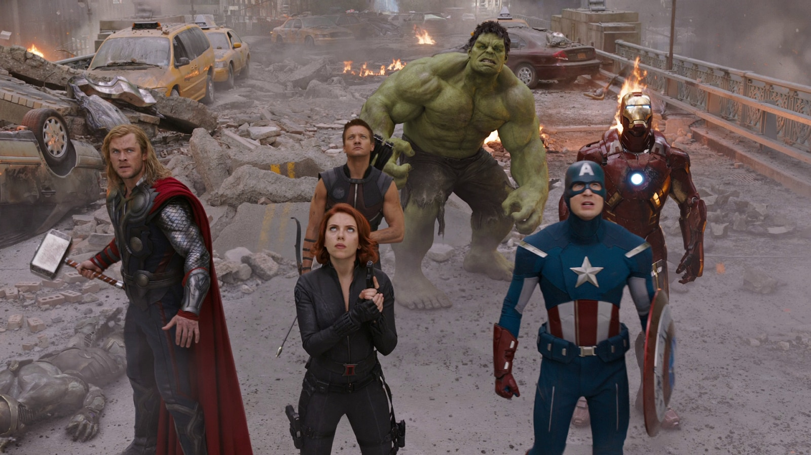
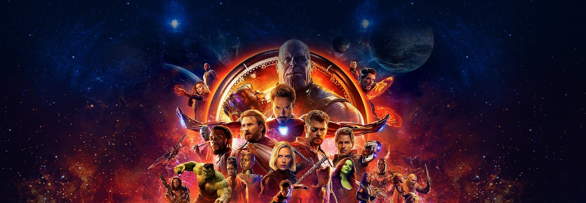
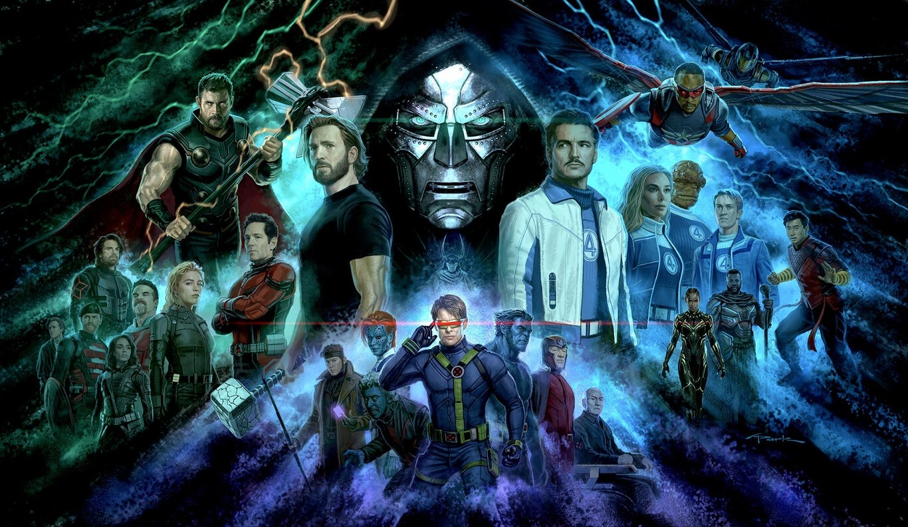

Linha do Tempo ⏳
O UCM possui uma história extensa, formada por acontecimentos que se conectam ao longo de vários anos,
e por mais que a maioria dos filmes se conectem conforme são lançados, alguns filmes se passam em épocas
diferentes
das suas datas de lançamento.
Nesta página, você poderá acompanhar os principais acontecimentos em ordem cronológica e entender
melhor como as histórias se relacionam.
Origem dos heróis e formação da "Iniciativa Vingadores" ⚔️
(filmes organizados por ordem de acontecimentos)

- Capitão América: O Primeiro Vingador — 1943-1945
- Capitã Marvel — 1995
- Homem de Ferro — 2010
- Homem de Ferro 2 — 2011
- O Incrível Hulk — 2011
- Thor — 2011
- Os Vingadores — 2012
- Homem de Ferro 3 — 2012
Expansão do Universo e Jóias do Infinito 💎

- Thor: O Mundo Sombrio — 2013
- Capitão América: O Soldado Invernal — 2014
- Guardiões da Galáxia — 2014
- Guardiões da Galáxia Vol. 2 — 2014
- Vingadores: Era de Ultron — 2015
- Homem-Formiga — 2015
- Capitão América: Guerra Civil — 2016
- Viúva Negra — 2016
- Pantera Negra — 2016
- Homem-Aranha: De Volta ao Lar — 2016
- Doutor Estranho — 2016-2017
- Thor: Ragnarok — 2017
- Homem-Formiga e a Vespa — 2018
- Vingadores: Guerra Infinita — 2018
- Vingadores: Ultimato — 2018-2023
A Saga do Multiverso e o Novo Cenário Global 🌌

- WandaVision — 2023
- Falcão e o Soldado Invernal — 2024
- Shang-Chi e a Lenda dos Dez Anéis — 2024
- Eternos — 2024
- Homem-Aranha: Longe de Casa — 2024
- Homem-Aranha: Sem Volta Para Casa — 2024
- Gavião Arqueiro — 2024
- Doutor Estranho no Multiverso da Loucura — 2024
- Cavaleiro da Lua — 2025
- Ms. Marvel — 2025
- Thor: Amor e Trovão — 2025
- Mulher-Hulk: Defensora de Heróis — 2025
- Pantera Negra: Wakanda Para Sempre — 2025
- Homem-Formiga e a Vespa: Quantumania — 2026
- Guardiões da Galáxia Vol. 3 — 2026
- As Marvels — 2026
- Deadpool & Wolverine — 2024 / Multiverso
- Capitão América: Admirável Mundo Novo — 2027
- Thunderbolts* — 2027